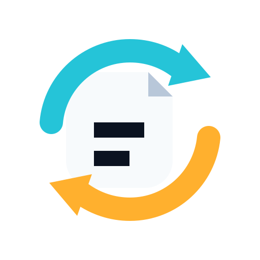
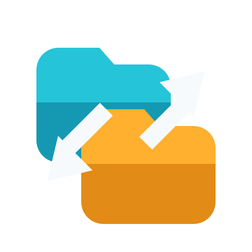
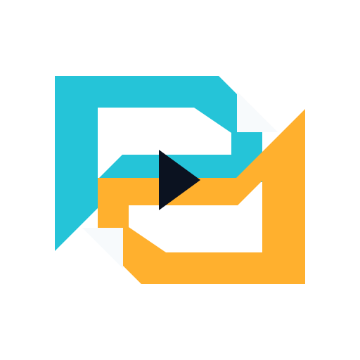
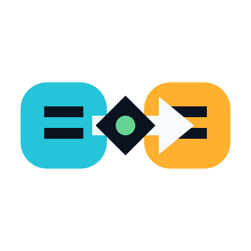
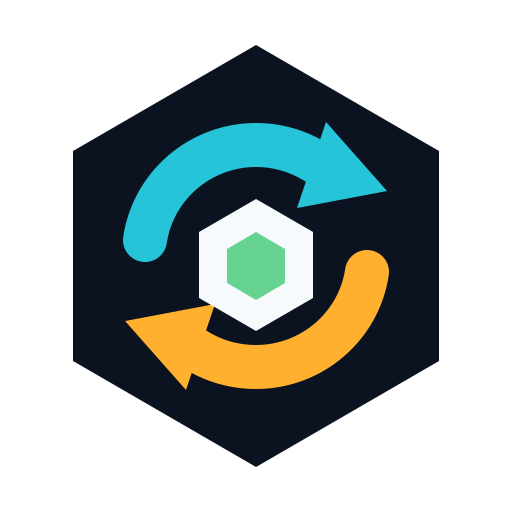

轨道同步
01文件位于双向循环中央，最直接地表达“自动同步文件”。
小尺寸
统一采用高对比、粗轮廓和少量色彩，优先保证 Windows 任务栏与窗口标题栏的小尺寸识别。所有方案均为原创矢量标记。

文件位于双向循环中央，最直接地表达“自动同步文件”。

两层目录与交叉传输箭头，强调本地和远端之间的文件交付。
文件穿过六边形网关，偏向“服务器部署、远程交付”的技术感。

两张折角文件互相咬合成流向，几何感强，轮廓最独特。

两个数据端点通过核心桥接，突出跨主机、跨网络的可靠连接。

循环箭头包围模块核心，兼顾同步主功能与桌面工具箱定位。